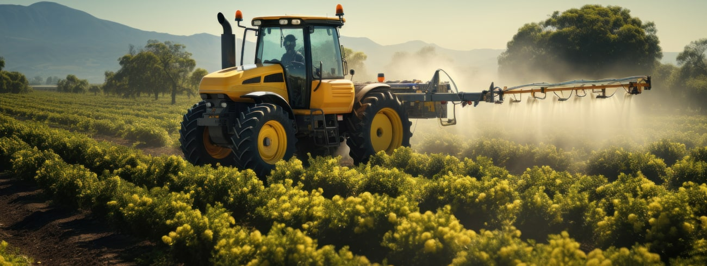

Государственное управление импортозамещением и проблемы растениеводства в сельскохозяйственном секторе

Импортозамещение представляет собой ключевое направление стратегического развития страны, осуществление которого может варьироваться по степени успешности в зависимости от системных факторов. Наиболее значительное влияние оказывают природные и климатические условия, а также доступные ресурсы, наряду с высокими темпами инновационного развития, при условии адекватного инвестирования в сельское хозяйство. Примеры России и других промышленных стран подтверждают, что сильное сельское хозяйство является залогом достижения независимости в области продовольствия и обеспечения регионов необходимыми продуктами.
Заголовок 2 уровня
За последние 8-10 лет российское сельское хозяйство добилось успехов в области импортозамещения. Этот процесс был поддержан как внешнеполитической и внешнеэкономической ситуацией, так и значительной государственной поддержкой, охватывающей не только сельское хозяйство, но и агропромышленный комплекс в целом. В настоящее время в России реализуется Государственная программа, направленная на развитие сельского хозяйства и регулирование рынков сельскохозяйственной продукции, сырья и продовольствия. В рамках этой программы акцент уделяется не только на улучшение материального производства в сельском хозяйстве, но и на цифровизацию агропромышленного комплекса, стимулирование роста сервисных сегментов в сфере национального продовольствия, а также на создание собственных семенных и генетических фондов для сельскохозяйственных животных [2]. Таким образом, программа охватывает широкий спектр инициатив, направленных на укрепление и модернизацию аграрной отрасли России.
Однако, несмотря на очевидные достижения, перед российским сельским хозяйством стоят серьезные вызовы. Во-первых, это зависимость от импортных технологий и оборудования, особенно в наиболее технологически сложных секторах, таких как производство тепличных овощей и молочное животноводство. Во-вторых, необходимо продолжать работу над повышением эффективности использования ресурсов, включая землю, воду и удобрения, чтобы обеспечить устойчивое развитие отрасли и минимизировать воздействие на окружающую среду.
Заголовок 3 уровня
Кроме того, важным аспектом является развитие сельской инфраструктуры и социальной сферы. Необходимо создавать привлекательные условия для жизни и работы в сельской местности, чтобы привлечь и удержать квалифицированные кадры, особенно молодежь. Это требует инвестиций в образование, здравоохранение, связь и транспортную инфраструктуру.
- растениеводство
- семеноводство
- виноградарство
- интенсивное садоводство
- производство машин
- зернотрейдинг
Заголовок 3 уровня
Кроме того, важным аспектом является развитие сельской инфраструктуры и социальной сферы. Необходимо создавать привлекательные условия для жизни и работы в сельской местности, чтобы привлечь и удержать квалифицированные кадры, особенно молодежь. Это требует инвестиций в образование, здравоохранение, связь и транспортную инфраструктуру.
- растениеводство
- семеноводство
- виноградарство
- интенсивное садоводство
- производство машин
- зернотрейдинг